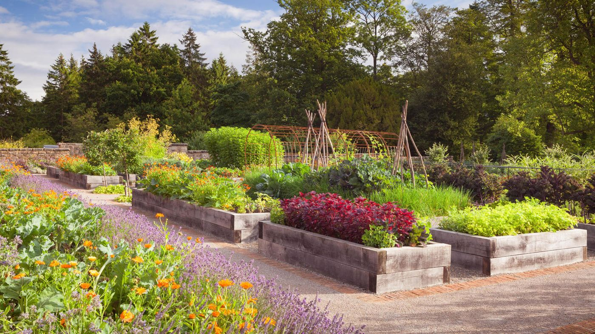
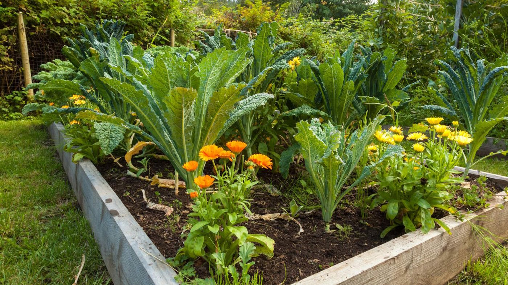

Growing Knowledge Hub › Growing Tips
Local Growing Tips
Practical advice for Ruddington and the East Midlands – written for clay soils, no-dig methods and our climate. Month-by-month jobs and full crop notes live on their own pages.

Clay Soil Management
Ruddington sits on heavy Nottinghamshire clay. It is fertile and holds water and nutrients well, but it stays cold in spring, becomes sticky when wet, bakes and cracks in summer, and can hold winter water. Work with it rather than against it. Brassicas and beans do especially well once the structure improves.
- Never work it wet. If it sticks to your boots or tools, leave it. Digging or walking on wet clay smears the structure for months.
- Feed from the top with bulky organic matter (compost, leaf mould or well-rotted manure). A barrowload per square metre makes a real difference. Do not add sand to heavy clay — it can set like concrete.
- Raised beds or no-dig beds improve drainage and stop the soil being trampled.
- Mulch heavily in autumn. Mulch permanent plants such as rhubarb, fruit and roses so the surface does not crack in summer.
- In spring, wait until the soil has dried enough before planting.
No-dig Methods
No-dig suits clay. Skip routine digging and rotavating. Cover the ground each year with well-rotted organic matter and let worms and fungi do the work.
- On a new bed, clear perennial weeds first. Overlapping cardboard can stay over turf. Then add 4–6 inches (10–15 cm) of compost and plant straight into it. A thicker first layer, about 3–6 inches (8–15 cm), helps when you are starting from scratch.
- Each year add a lighter top-up, about 2 inches (5 cm) — roughly 50 litres per square metre.
- Keep beds about 4 ft (1.2 m) wide so you can reach the middle without treading. Woodchip paths, or cardboard plus woodchip, keep boots clean.
- Lasagne beds follow the same idea. Watch the sides: they can become slug hotels.
- Weeds are fewer and easier to pull, and the structure improves year on year. It works on allotments and raised beds. Local sites such as Roots Allotments are set up this way.

No-dig beds
Build soil from the top – perfect for heavy clay.

Raised beds
Better drainage and easier access on clay.
Frost Dates & Weather
In the Ruddington and Nottingham area the last spring air frost is often mid-April in the city, and late April or early May on outlying or low-lying plots. A practical date to plant out tender crops is the end of May. The first autumn air frost is often early to mid-November, though some years it arrives in mid-October. Ground frost can continue for two to four weeks after the last air frost.
- Hardy crops (broad beans, peas, brassicas, onions, potatoes) can go out from mid-April, with fleece ready for a late snap.
- Keep tender plants (tomatoes, courgettes, beans, squash) protected until late May in a normal year. Always check the current forecast before planting them out.
- Use cloches, fleece or a cold frame to extend the season.
- Clay stays cold longer in spring — raised beds warm up faster.
- Heavy rain is common; good drainage (raised beds or no-dig) is essential.
Pests and Problems
Start with the least disruptive fix. These are the problems that show up most often on local clay.
- Slugs. Worst on clay and in wet autumns. Pick them by torchlight, use traps and encourage predators. Lift potatoes promptly rather than leaving them in wet clay. Charlotte, Kestrel, Estima and Pentland Dell are more slug-resistant. Nematodes work less well on poorly drained clay.
- Aphids and blackfly. Squash colonies by hand and encourage ladybirds. Pinch out broad bean tips once the pods have set.
- Potato and tomato blight. Warm wet weather brings it, and there is no spray for home growers in the UK. Give plants wider spacing and water at the roots. At the first sign on potatoes, cut off the haulms and lift the crop about two weeks later. Check a current blight forecast, such as BlightSpy, before you assume a spell of wet weather is safe.
- Clubroot. Prevention matters more than a cure. Lime only if a soil test shows the ground is acid, improve drainage, leave four years or more between brassicas, and clean tools. Resistant choices include Crispus F1 sprouts, Clapton F1 cauliflower, and Kilaxy or Kilaton cabbages.
- Pigeons. Net brassicas properly, with the netting pulled taut.
Local Allotments
- Hareham Gardens (Asher Lane) – traditional plots, owned by James Peacock Bread Charity, low rents.
- Paradise Gardens (Wilford Road area) – community and raised beds, including social prescribing plots.
- Roots Allotments (Ruddington Fields, Wilford Road) – a large no-dig, chemical-free community site opened in 2024. Beds are started with cardboard plus compost, and tools are shared.
All benefit from the same clay-soil and no-dig advice above. Waiting lists vary – check with the relevant organisers or the Parish Council.
Monthly Jobs
The month-by-month checklist for East Midlands gardens and allotments is on its own page, It sits on its own page so you can find the checklist quickly.
Crop Guide
Sowing dates, spacing, harvest windows and varieties for each crop are in the Crop Guide, including varieties in this demo catalogue.
These guides are a starting point based on local East Midlands conditions. Adapt them to your own soil and the forecast in front of you.